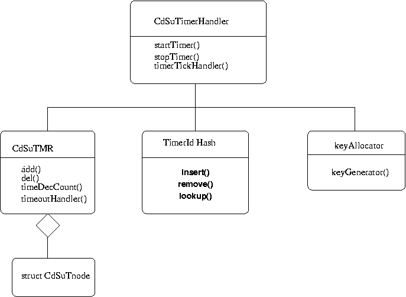
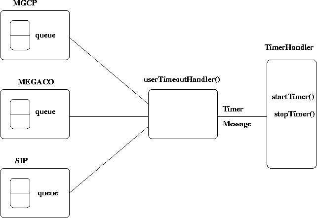

| Document id | : |
ITS-MDD-CDSU_TIMER-001 |
| Document name | : |
Timer Module Design Document |
| Author(s) | : |
Indu Mishra |
| Contributor(s) | : |
Shiv Kumar B, Titty Thomas |
| Approved By | : |
Prakash R. |
| Document Source | : |
Internet Telephony Group, C-DOT, Bangalore |
| Copyright @ 2003 by C-DOT. All rights reserved. Contents of publication may not be reproduced in any form without permission from C-DOT |
| Document History | ||||
|---|---|---|---|---|
| Version No | Revised By | Released On | Approved By | Remarks |
| Draft 1 | Shiv Kumar B | 26th Feb, 2003 | Prakash R | The document was released as the Timer Module |
| Draft 2 | Shiv Kumar B | 12th May, 2003 | Prakash R | Feedback incorporation: |
| |
|
|
|
|
| |
|
|
|
|
| |
|
|
|
|
1 Introduction
1.1 Purpose and Scope
1.2 Acronyms, Abbreviations and Definitions
1.3 References
2 Module Description
2.1 Design Goals and Constraints
2.2 Definitions
2.3 Functional Details
3 Decomposition Description
3.1 Class diagram
3.2 Internal Architecture
4 Design Considerations
4.1 Issues
5 Processing/Algorithm/DataStructures
6 Usage Exle
The Timer design document tells about the Internal Architecture of the timer, API's used, class hierarchy and about the algorithms. This document is for reference by users and also for the designers. This document provides the design document for Module SRS.
[HTM97]: Hashed and Hierarchical Timing Wheels: Efficient Data Structures
for Implementing a Timer Facility , by George Varghese
and Anthony Lauck, IEEE/ACM Transactions on networking, Dec 1997 .
[1B-SRS-001]: SRS for Timer Utility.
The goal is to design such a Timer Module which is
Timing Wheel: In the simulation of digital circuits, it is often sufficient to consider event scheduling at some time intervals which are multiples of the clock interval ,say c.Then , after the program processes an event ,it increments the clock variable by c until it finds any outstanding events at the current time.It then executes the event(s). One of the widely used and efficient method to implement above scheduling is the so called timing-wheel technique.It is used to start large number of s/w timers using h/w (OS) clock and these timers are hashed to a particular index in timing Wheel Hash.
The main Timer Module provides three functions as a set of API's:
1) CdSuTmrRetVal startTimer (CdSuTimerId &timerId, const CdSuTimerInfo &userTimerInfo)
The user will create a timerUserInfo object and call the startTimer function with the timerUserInfo object and the timerId. This function will create and start a timer. When the timer is started then it returns Values of type CdSuTmrRetVal.Return Values can be 0 for success or others in case of errors.When the timer expires it will call either userTimeoutHandler function or a CallBackFunction.Values for CdSuTmrRetVal are as follows:
CDSU_TMR_RV_SUCCESS = 0 ,//for Success
CDSU_TMR_RV_INV_TIME_COUNT = 1,
//for timeCount
CDSU_TMR_RV_INV_MODID,
//invalid modid
CDSU_TMR_RV_INV_TMRDEL,
//invalid timer delete
CDSU_TMR_RV_INV_HASHDEL,
//invalid hash delete
CDSU_TMR_RV_INV_MUTEXLOCK,
//invalid mutex lock
CDSU_TMR_RV_INV_MUTEXUNLOCK,
//invalid mutex unlock
CDSU_TMR_RV_INV_TMRID,
//invalid timerId
CDSU_TMR_RV_INV_CALLBACK
//Invalid CallBackFunction
The Object timerUserInfo contains mandatory and optional fields which are required to be input correctly.Please refer the API's. Handling of return values depends on client.
2) CdSuTmrRetVal cancelTimer (const CdSuTimerId)
The cancel timer will take as input the TimerId of the TimerObject and cancel it.The timer with id as timerId is deleted from the timing Wheel Hash and also from the Hash. Handling of return values depends on client.They are same as specified in startTimer() above.
3.) void timerTickHandler()
This function is used to decrement timecounts by every CLOCK_TIME .When the timecounts become Zero then the timeOutHandler function is called up and which calls up the userTimerHandler function to perform some user related activities . Then the timer node is deleted from timing Wheel and also from Hash. If the ticks are not zero then it exits from loop and process is repeated.
1.) CdSuTimerHandler:
CdSuTimerHandler class is the main class and the StartTimer ,StopTimer and timerTickHandler functions belong to this class. It uses friend Class Timeque and Private class as KeyAlloc and Hash.
2.) CdSuTMR
CdSuTMR is the new Timing Wheel Implementation which uses the Timing
wheel to create an array of Double Linked Lists of nodes and then to
delete them on timeout or on stopTimer function. Each node is of Timer object
type.A node is added during StartTimer and deleted during StopTimer. Count
in node is decremented during call to timerTickHandler.
To set a timer at j units past current time , we index into Element i+j(mod
MaxInterval) , and put the timer at the head of the list of timers that will
expire at a time = Current Time+j units.Each tick we increment the current
timer pointer (mod MaxInterval) and check the array element being pointed
to. If the element is 0 no more work is to be done on that timer tick. But
if it is non zero we do expiry processing on all timers that are stored in
that list.
Normally to insert an element in the array we add the element at its index
position.But in case we have less memory then we use Hash to hash element
to yield an index at which it can be added in Hash table.For exle , if
the size of the table is a power of 2 , an arbitrary size timer can easily
be divided by teh table size. The remainder (low order bits) is added to
the current time pointer to yield the index within the array. The result
of the division (high order bits) is stored in a list pointed to by the index.
In follwing figure ,let the table size be 256 and the timer be a 32 bit timer.
The remainder on division is the last 8 bits. Let the value of the last 8
bits be 20. Then the timer index is 10(Current Timer Pointer) + 20(remainder)
= 30. The 24 high order bits are then inserted into a list that is pointed
to by 30th element.
We are using a sorted double linked list for maintaining the lists of timers
at each index in hash.
The above timing Wheel algorithm has a latency of O(1) for startTimer
,stopTimer , timerTickHandler.
3.) Hash:
It is used to hash the timerIds and store address of the node for that particular timerId in the Hash table.Once a timer node is created and added in the Timing Wheel Hash then its address and timerId(unique to each timer) is added in Hash. timerId is hashed to a position in Hash and then address is added to that position. Similarly in case of deletion , when ever a timer is deleted from timingWheel hash , its address is to be deleted from Hash also. We are using Hash basically to hash all timers created due to limited memory consideration.Secondly instead of manipulating timer nodes directly by accessing them using pointers , we are storing timerIds in Hash with address of each timer node. timerIds uniquely identify the nodes and so using timerIds we can access a node. It solves pointers problem and then eases handling of timers.
4.) Key Alloc:
It is used to generate unique timerId's .timerIds are used to uniquely identify a timer.So instead of maintaing pointers to timer nodes to access them we use timerIds to identify each timer . Simple key generation algorithm is being used in which we have a variable of type unsigned integer. Then we keep on incrementing that variable every call to keyAllocator function.Each new value of the variable acts as a timerId.No two same timerIds can be there.

fig 3.1
The Application will start the OS timer for 10ms. Whenever the user wants
to use the Timer timerobject should be created. The timerhandler will
create the timeWheel and add the Tnode to the rimeWheel .The timerhandler
will call the timerTickService which will again call timeDecCount
and the number of ticks( quotient of total ticks and MaxInterval) will be
decremented. When the value becomes zero, the timeout handler function will
send the timer message.The userTimeoutHandler will identify the module and
put the message in the appropriate queue.
As per the requirements instead of a userTimeoutHandler being called up
Client can also refer to a CallBack function.
Following figure show the detailed interaction of various entities.

fig 3.2
class CdSuTimerHandler
{ public: CdSuTimerHandler () ~CdSuTimerHandler () CdSuTmrRetVal startTimer (CdSuTimerId& timerId, const CdSuTimerInfo& userTimerInfo) CdSuTmrRetVal stopTimer (const CdSuTimerId) void timerTickHandler () friend class CdSuTMR protected: CdSuTMR* timeWheel private: CdSuIntHash* timerHash KeyAllocator* keyAlloc pthread_mutex_t timer_mutex }
CdSuTmrRetVal startTimer (CdSuTimerId& timerId, const CdSuTimerInfo& userTimerInfo)
{
//Start mutex lock
// check for input values.
// if input is nor proper return error.
//else
// call KeyAllocator function to return a timerId
//check for uniqueness by calling Hash.lookup function.
//if unique then assign it to permanent timerId.
// else repeat the process.
//now create a node with user data and timerId.
//now determine a hash position in timing Wheel Hash by taking mod of
//(number of ticks and hash size)
//add the node at proper position in the timingwheel Hash at that hash position
//add timerIds along with node address in Hash table.
//in case timecounts are 0 then call timeOutHandler.
//unlock mutex
//return success
}
CdSuTmrRetVal stopTimer (const CdSuTimerId)
{
//get input timerId
//lock mutex
//lookup in hash for the timerId.
//if not present then invalid TimerId.return invalid
//else hash to the timerId and get node address.
// delete node with that address then delete entry from hash for that timerId.
//unlock mutex
//return success.
}
void timerTickHandler ()
{
// mutex lock
//call tickdeccount function to decrease timecounts by one tick time.
// if count becomes 0 then call timeOutHandler function
//it calls usertimeOutHandler function or Call Back Function depending on
the message type.
//after that call delete Tnode .
//unock mutex
}
Program: timertest.cpp
//============================================================================
// File : timertest.cpp
// Description :
//============================================================================
//---------------------------------------------------------------------------
// include
//----------------------------------------------------------------------------
#define TOTAL_THREADS 1
#define MAX_THREAD1_TIMERS 500
#define MAX_TIMERS (MAX_THREAD1_TIMERS)
//----------------------------------------------------------------------------
// Enumerations.
//----------------------------------------------------------------------------
enum Modules
{
MODULE_P = 1,
MODULE_Q,
MODULE_R
}
//----------------------------------------------------------------------------
// Function prototypes.
//----------------------------------------------------------------------------
void cdSuUserTimeoutHlr (CdSuTimeout);
//functions called up by each thread
void* startTestTimer1 (void*);
// Call Back function
void CallBackFunction (CdSuTimeout &);
#if defined (__ECOS) || defined (sun)
void sigalrmHandler (int signo, siginfo_t * info, void *context);
#else
void sigalrmHandler (int xx);
#endif
//----------------------------------------------------------------------------
// Global variables.
//----------------------------------------------------------------------------
CdSuTimerHandler *timerHandler;
// thread ids
pthread_t tid1;
//tid of mail thread
int maintid;
//structure timezone
struct timezone* Timezone;
//---------------------------------------------------------------------
//Part for Message Queue
//---------------------------------------------------------------------
CdSuTimerMsg tmmsg;
Queue CdSuTimerMsg* *queue1;
//---------------------------------------------------------------------
// Function : main
// Description :
//---------------------------------------------------------------------
int
main (int argc, char **argv)
{
int retVal;
// create timer handler
timerHandler = new CdSuTimerHandler;
printf("TOTAL NUMBER OF TIMERS :%d\n",MAX_THREAD1_TIMERS);
queue1 = new Queue CdSuTimerMsg* (MAX_THREAD1_TIMERS);
maintid = pthread_self();
// block all signals
sigset_t sigset;
sigfillset (&sigset);
pthread_sigmask (SIG_BLOCK, &sigset, NULL);
//Create new thread 1
pthread_attr_t thread1Attr;
pthread_attr_init (&thread1Attr);
//pthread_attr_setscope (&thread1Attr, PTHREAD_SCOPE_SYSTEM)
retVal = pthread_create (&tid1, &thread1Attr,startTestTimer1, NULL);
if (retVal != 0)
printf ("Thread1 create error\n");
#if defined (__ECOS) || defined (sun)
// ecos timer initialization.
struct itimerspec timerValue; // Timeoutvalue on eCos
sigset_t mask ;// Signal Mask
timer_t timer1; // Timer
// enable posix timer, initialise the signal set
sigfillset (&mask);
// install signal handler
struct sigaction sa;
sa.sa_sigaction = sigalrmHandler; //on signal this fn gets invoked.
sa.sa_mask = mask;
sa.sa_flags = SA_SIGINFO;
#ifdef sun
sa.sa_flags |= SA_RESTART;
#endif
// specify the action associated with a signal
sigaction (SIGALRM, &sa, NULL);
// create timers
struct sigevent sev;
// notification type
sev.sigev_notify = SIGEV_SIGNAL;
sev.sigev_signo = SIGALRM;
sev.sigev_value.sival_int = 0xABCDEF01;
// timer values
timerValue.it_value.tv_sec = 0;
timerValue.it_value.tv_nsec = 10000000;
timerValue.it_interval.tv_sec = 0;
timerValue.it_interval.tv_nsec = 10000000;
timer_create (CLOCK_REALTIME, &sev, &timer1);
timer_settime (timer1, 0, &timerValue, NULL);
#else
itimerval itval, otval;
itval.it_value.tv_sec = 0;
itval.it_value.tv_usec = 100000;
itval.it_interval.tv_sec = 0;
itval.it_interval.tv_usec = 100000;
// set signal handler
setitimer (ITIMER_REAL, &itval, &otval);
#endif
while (1)
{
// Clear all signals except SIGALRM.
sigemptyset (&sigset);
sigaddset (&sigset, SIGALRM);
sigaddset (&sigset, SIGINT);
int sig;
sigwait (&sigset, &sig);
if ( sig == SIGINT)
{
printf("received SIGINT, count = %d\n", counter);
// Call the timer "tick ()" function.
if ( sig == SIGALRM)
timerHandler- timerTickHandler();
}
}//main
//---------------------------------------------------------------------
// Function : startTestTimer1()
// Description :
//---------------------------------------------------------------------
void* startTestTimer1 (void*)
{
int i;
CdSuTimerId timerId[ MAX_THREAD1_TIMERS ];
CdSuTimerInfo timerInfo1;
timerInfo1.timeCounts = 5;
timerInfo1.timeUnits = CDSU_TMR_TU_HUNDREDMS;
timerInfo1.destModuleId.srvcHlrId.srvcType = MODULE_P;
timerInfo1.opcode = 12;
timerInfo1.timerType = CDSU_TMR_TT_TRIGGER_ONCE;
timerInfo1.timeoutReportType = CDSU_TMR_TRT_MESSAGE;
timerInfo1.timerCallBackFn = NULL;
for (i = 0 i MAX_THREAD1_TIMERS i++)
{
int back = timerHandler- startTimer(timerId[ i ], timerInfo1);
if(back == CDSU_TMR_RV_INV_TIME_COUNT)
{
printf("TimeCount/TimeUnitsa are Invalid: %d\n",i);
}else
if (back == CDSU_TMR_RV_INV_TMRID)
{
printf ("Timer NOT started, id: %d\n", i);
} else if (back == CDSU_TMR_RV_SUCCESS)
{
printf ("Timer started,id: %d\n", timerId[i]);
} else if(back == CDSU_TMR_RV_INV_CALLBACK)
{
printf ("Invalid Timer CallBack Function for id: %d\n", i);
}
} //for
//To Stop all timers after starting them.
int m;
for(m = 0 m 50 m++)
{
int back = timerHandler- stopTimer(m);
if(back != 0)
printf("StopTimer Failed for Id :%d\n",m);
}
//after completing
pthread_kill (maintid, SIGINT);
return 0;
}
//---------------------------------------------------------------------
// Function : cdSuUserTimeoutHlr
// Description : user handler function
//--------------------------------------------------------------------
void cdSuUserTimeoutHlr (CdSuTimeout tempTimeOut)
{
CdSuTimerMsg *ptr;
ptr = new CdSuTimerMsg;
ptr- destId = tempTimeOut.destModuleId;
ptr- timerId = tempTimeOut.timerId;
ptr- userInfo = tempTimeOut.userInfo;
ptr- opcode = tempTimeOut.opcode;
switch (ptr- destId.srvcHlrId.srvcType)
{
case MODULE_P:
//printf ("Timeout for module P\n");
break;
case MODULE_Q:
//printf ("Timeout for module Q\n");
break;
case MODULE_R:
//printf ("Timeout for module R\n");
break;
default:
//printf ("Invalid module\n");
break;
}
} // void userTimeoutHandler ()
//---------------------------------------------------------------------
// Function : CallBackFunction
// Description : Used to make a message and send it back to client.
// Input : reference timerId and
reference UserInfo.
//---------------------------------------------------------------------
void CallBackFunction (CdSuTimeout & tempTimeOut1)
{
printf ("TimeoutId : %d\n", tempTimeOut1.timerId);
}
//---------------------------------------------------------------------
// Function : sigalrmHandler
// Description : Solaris implementation of timer inbuilt functions.
//---------------------------------------------------------------------
#if defined (__ECOS) || defined (sun)
void sigalrmHandler (int signo, siginfo_t * info, void *context);
#else
void sigalrmHandler (int xx);
#endif
{
timerHandler- timerTickHandler ();
}